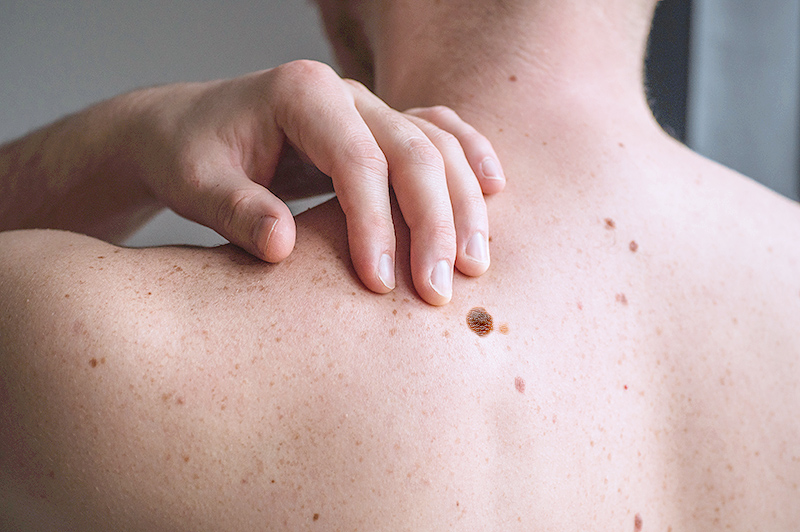

Prueba IA CNN

CONSLUSIÓN
Negativo
ANÁLISIS
- El lunar tiene bordes regulares.
- No presenta escamas ni cambios de color.
- No asemeja un cáncer de melanoma en etapa inicial.
PORCENTAJE
92% noventa y dos por ciento de acierto